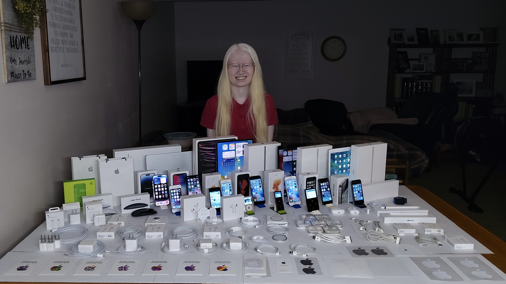

Beyond Sight
My Story

Welcome to iAccessAbility! My name is Leah Dykema, the creator behind the iAccessAbility YouTube channel, formerly known as AppleTalk. A bit about my background: I was born in Xiamen City, in the Fujian province of China, and spent the first 3 1/ 2 years of my life in an orphanage before being adopted and brought to the United States.
I'm the youngest of four siblings, with two older brothers who are both married with kids, and an older sister in college. Growing up in a homeschooling family, we stayed active and involved in a variety of activities. I’ve participated in swimming, dance, track and field, bowling, and even a Paralympic sport called Goalball.
My journey to independence with visual impairment has been supported by the Iowa Educational Services for the Blind and Visually Impaired, where I've made incredible friends and met wonderful trainers through training sessions, weekend sports retreats, and camps. I also learned Braille with the help of the Iowa Department for the Blind, and I now use it to type on my phone ‑ here's a demo of how I do that: How to Use Braille Screen Input on an iPhone or iPad - YouTube
I've been an Apple fan, collector, and user since I was 9 years old, with the iPad and iPhone being my primary devices. Since 2017, iPads have been my essential tools for reading, writing, drawing, watching content, creating art, and more. My passion for technology and curiosity have driven me to become self‑taught, with YouTube playing a big role in expanding my knowledge.
I find it easiest to read with inverted colors, like the white text on a black background you see here. Simple fonts, such as Arial or Helvetica, in larger, bold styles, improve my readability. Because I'm sensitive to light, white backgrounds can be overwhelming, often washing out content and leading to eye strain. Even small white areas, like a line or image, can reduce the visibility of the entire screen for me.